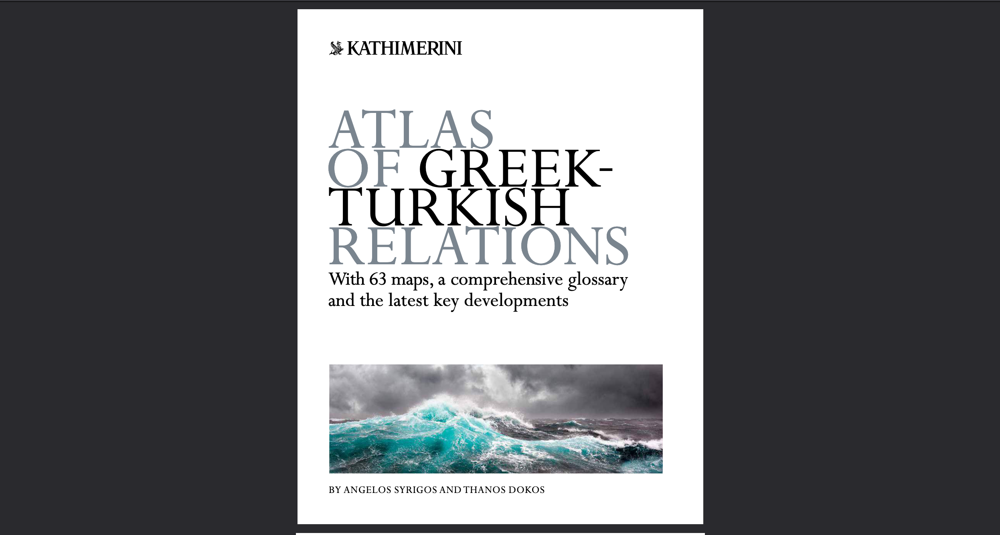

The Atlas of Greek-Turkish Relations
Lead editor for the English translation of ‘The Atlas of Greek-Turkish Relations,’ a comprehensive 130+ page atlas originally written in Greek. Ensured accuracy on a politically sensitive topic under extremely tight deadlines.
This major editorial project involved leading the English-language translation of a comprehensive atlas examining the complex and politically sensitive relationship between Greece and Turkey. The original Greek-language publication was a significant scholarly and journalistic work, and the English translation needed to maintain the same rigour and accuracy.
As lead editor, responsibilities included ensuring that all English content produced by multiple translators was error-free and well-written, with accurate technical terminology covering diplomatic, military, economic, and cultural dimensions of the bilateral relationship.
The project was completed on schedule despite extremely tight timelines. The quality of the editorial work was acknowledged by the author in the book’s acknowledgments:
“The translation project was completed in an extremely limited period of time, thanks to the excellent job of its lead editor Pavlos Zafiropoulos, whose close scrutiny and expertise guaranteed a faithful and accurate translation…”